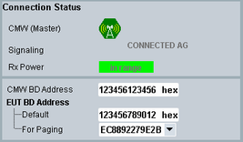

The upper left pane of the main view contains connection tabs. The "Connection Status" tab displays information dependent on the selected burst type. All settings in this view can also be accessed via the configuration dialog.
In the connection status pane, the current connection states, information for troubleshooting and the most important Bluetooth device settings are shown for BR and EDR.
LE devices cannot be scanned or paged. Several parameters are therefore not available for LE.

The color of the antenna icon indicates the main state of the "Bluetooth Signaling" application: gray (OFF) or green (ON).
Remote command:The current signaling state. For a detailed description of the available states and state transitions, see "Signaling States".
Remote command:Indicates whether the power currently received from the EUT is "In Range" with the configured expected nominal power (see "TX Level (CMW)") or if the receiver is "Overdriven" or "Underdriven".
The Bluetooth device address used by the R&S CMW and EUT.
The "CMW BD Address" and "EUT BD Address" settings are covered in the GUI description, see "Paging Configuration".